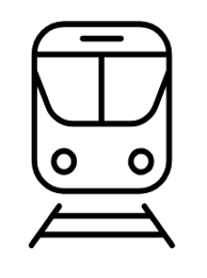

de Paris : 1h30 - 2h15
Transilien P
à Gare de l'Est
vers
Château-Thierry
descendre à
Nanteuil-Saâcy
(inclus dans le pass Navigo)
Une fois arrivés à la gare, rejoindre le chemin qui borde la marne côté Saâcy-sur-Marne, jusqu'au troisième portail en bois. C'est la parcelle avec le saule pleureur. 🙌
Liens utiles :